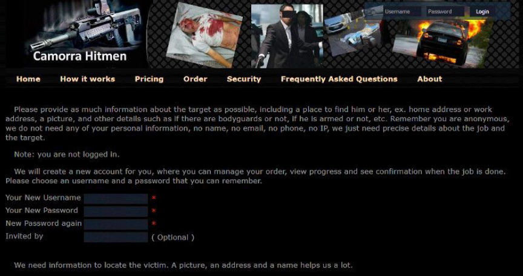
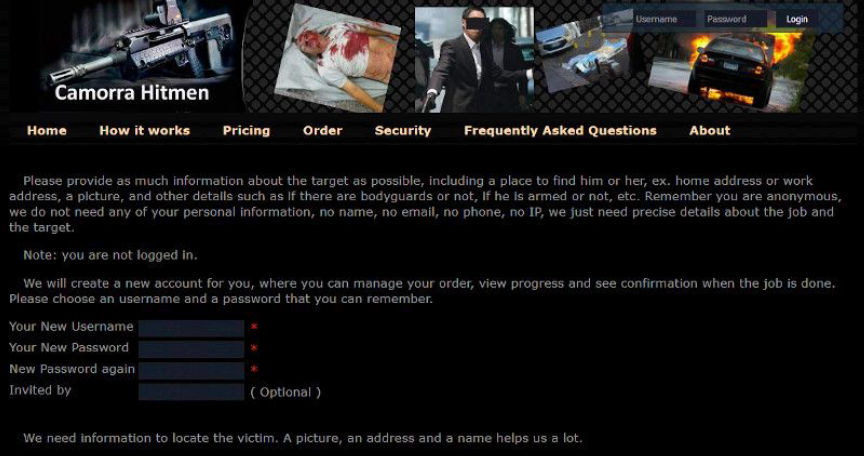

Prosecution Asks for a Five Year Sentence in Singapore Murder for Hire Case
~3 min read | Published on 2019-09-09, tagged Murder-for-Hire using 641 words.
The prosecution has asked the court to sentence a businessman from Singapore to five years in prison for paying a hitman on the darkweb to murder his former affair partner’s new boyfriend. The businessman had asked the hitman to make the death look like a car accident.
Deputy Public Prosecutor Kumaresan Gohulabalan told the court on Monday, September 9, that Allen Vincent Hui Kim Seng—the defendant—had stalked his former lover “incessantly.” The prosecutor asked the court to sentence Hui to five years in prison for intentionally abetting the murder of his former mistress’ boyfriend.
At a previous hearing, Hui admitted paying more than $5,000 in Bitcoin to a murder-for-hire site on the darkweb called Camorra Hitmen. Ten days before the scheduled hit, a journalist working with CBS notified the Ministry of Foreign Affairs via the embassy in Washington about a plan targeting a Singaporean. Five days later, the Singapore Police Force raided and arrested Hui.
This case resembles many similar cases recently covered by darknetlive and several news outlets. One similarity is the involvement of yet another fake murder-for-hire site on the darkweb. Camorra Hitmen is a scam operated by a fraudster known as “Yura.” Many of the more serious users of Yura’s murder-for-hire sites have also ended up in handcuffs with similar charges. Another similarity is the involvement of the CBS television network.
CBS ran a series on these murder-for-hire scams called “Click For A Killer” wherein a cybercrime expert detailed the operation and the steps he had taken to prevent any actual violence from occurring. The sites are nothing more than cheap scams set up to steal thousands of dollars in Bitcoin from desperate individuals. There are no hitmen. However, the people soliciting murder through the sites might be desperate enough to take measures into their own hands—something that happened several years ago in the United States. Stephen Allwine had spent thousands at Besa Mafia to have his wife killed. After getting tired of the constant delays and excuses provided by Yura, Allwine shot and killed his wife. The researcher working with CBS is trying to prevent similar incidents from happening in the future.
“Most scams aren’t dangerous or don’t feature dangerous people,” the researcher said in an interview with Wired. “If you get ripped off by a ‘Nigerian prince’, you’re not dangerous – just stupid. This scam was different, fundamentally different, from any scam I had seen before. The people who are using it are the dangerous people, more than the scammer himself. The clients are the bad guys.”
Although Hui had ultimately paid the purported hitman to kill the romantic rival—Tan Han Shen—he had originally asked the hitman to cut off one of the victim’s hands. He changed his mind and asked the hitman to pour acid on the target’s face. Eventually Hui settled on homicide.
Hui had stumbled on the Camorra Hitmen site after searching the internet for “hitmen for hire,” according to investigators. He found instructions on downloading the Tor Browser and purchasing Bitcoin.
Deputy Public Prosecutor Kumaresan Gohulabalan:
The accused’s engagement of Camorra Hitmen to murder a stranger was not only a cold-blooded but highly sophisticated act which involved significant planning and premeditation, and leveraged on the convenience and anonymity of the Dark Web, a platform notorious for illegal activity.
Defence lawyer Lee Teck Leng argued that since the site was a scam from the very start, the target was never in any real danger. He referenced the article about the site by Wired where Chris Monteiro described Besa Mafia, one of the Camorra Hitmen predecessors, as a scam. The lawyer asked the judge to consider a sentence of two years and six months imprisonment instead of the five years requested by the prosecution.
District Judge Shaifuddin Saruwan remanded Hui into custody and scheduled a sentencing hearing for September 18.
Deputy Public Prosecutor Kumaresan Gohulabalan told the court on Monday, September 9, that Allen Vincent Hui Kim Seng—the defendant—had stalked his former lover “incessantly.” The prosecutor asked the court to sentence Hui to five years in prison for intentionally abetting the murder of his former mistress’ boyfriend.
At a previous hearing, Hui admitted paying more than $5,000 in Bitcoin to a murder-for-hire site on the darkweb called Camorra Hitmen. Ten days before the scheduled hit, a journalist working with CBS notified the Ministry of Foreign Affairs via the embassy in Washington about a plan targeting a Singaporean. Five days later, the Singapore Police Force raided and arrested Hui.
A Picture of Allen Vincent Hui Kim Seng Taken Shortly After His Arrest
This case resembles many similar cases recently covered by darknetlive and several news outlets. One similarity is the involvement of yet another fake murder-for-hire site on the darkweb. Camorra Hitmen is a scam operated by a fraudster known as “Yura.” Many of the more serious users of Yura’s murder-for-hire sites have also ended up in handcuffs with similar charges. Another similarity is the involvement of the CBS television network.
CBS ran a series on these murder-for-hire scams called “Click For A Killer” wherein a cybercrime expert detailed the operation and the steps he had taken to prevent any actual violence from occurring. The sites are nothing more than cheap scams set up to steal thousands of dollars in Bitcoin from desperate individuals. There are no hitmen. However, the people soliciting murder through the sites might be desperate enough to take measures into their own hands—something that happened several years ago in the United States. Stephen Allwine had spent thousands at Besa Mafia to have his wife killed. After getting tired of the constant delays and excuses provided by Yura, Allwine shot and killed his wife. The researcher working with CBS is trying to prevent similar incidents from happening in the future.
“Most scams aren’t dangerous or don’t feature dangerous people,” the researcher said in an interview with Wired. “If you get ripped off by a ‘Nigerian prince’, you’re not dangerous – just stupid. This scam was different, fundamentally different, from any scam I had seen before. The people who are using it are the dangerous people, more than the scammer himself. The clients are the bad guys.”
Although Hui had ultimately paid the purported hitman to kill the romantic rival—Tan Han Shen—he had originally asked the hitman to cut off one of the victim’s hands. He changed his mind and asked the hitman to pour acid on the target’s face. Eventually Hui settled on homicide.
The Camorra Hitman Homepage
Hui had stumbled on the Camorra Hitmen site after searching the internet for “hitmen for hire,” according to investigators. He found instructions on downloading the Tor Browser and purchasing Bitcoin.
Deputy Public Prosecutor Kumaresan Gohulabalan:
The accused’s engagement of Camorra Hitmen to murder a stranger was not only a cold-blooded but highly sophisticated act which involved significant planning and premeditation, and leveraged on the convenience and anonymity of the Dark Web, a platform notorious for illegal activity.
Defence lawyer Lee Teck Leng argued that since the site was a scam from the very start, the target was never in any real danger. He referenced the article about the site by Wired where Chris Monteiro described Besa Mafia, one of the Camorra Hitmen predecessors, as a scam. The lawyer asked the judge to consider a sentence of two years and six months imprisonment instead of the five years requested by the prosecution.
District Judge Shaifuddin Saruwan remanded Hui into custody and scheduled a sentencing hearing for September 18.